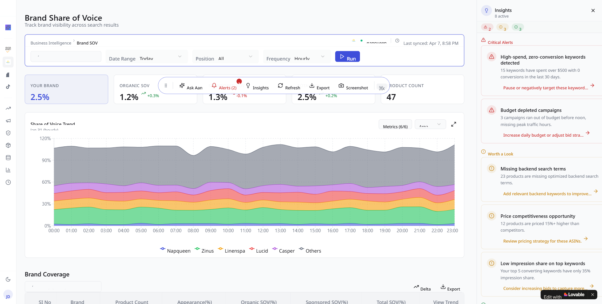
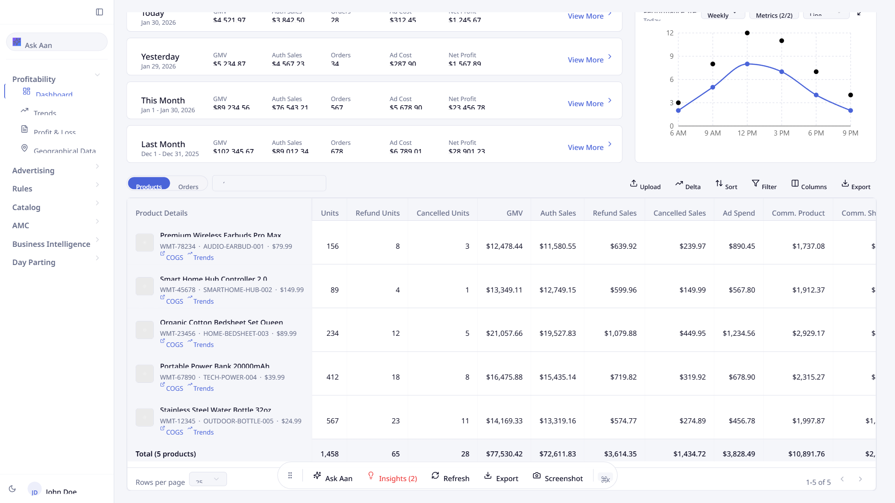

Primary Coral
#F26E77
Use exactly as supplied inside the mark. Do not shift it warmer, cooler, or softer.
Phase 1 / Anarix Foundation + Phase 2 / Aan Layer
Phase 1 keeps the approved Anarix logo, symbol, colors, and loader reference intact. Phase 2 adds Aan as the diamond-first mascot, state system, and placement spec shown on the real Anarix dashboard framework.
Color System
The full logo includes a dedicated dark ink for the wordmark, alongside the coral and blue used in the geometric mark. Any paper, slate, or ink tones used elsewhere in this manual are supportive presentation neutrals, not new brand colors.
Primary Coral
Use exactly as supplied inside the mark. Do not shift it warmer, cooler, or softer.
Primary Blue
Use exactly as supplied inside the mark. Do not brighten, mute, or gradient-fill it.
Logo Ink
Use exactly as supplied for the full-logo wordmark. Do not reverse or soften it.
Logo And Symbol

Definition
Both SVG files are official and both must remain exact. Do not redraw the logo, separate the icon from the wordmark inside the full lockup, or alter the standalone symbol geometry.
Clear Space
Maintain at least 1x clear space around the logo or symbol, where x equals the height of the coral diamond.
Minimum Digital Size
Do not reproduce the full logo below 160px wide or the symbol below 48px wide on screen.
Background Control
Place the full logo directly on light surfaces, or inside a light carrier when it must appear over dark surroundings. The standalone symbol may sit directly on light or dark surfaces when contrast stays clear.
Approved Usage
Logo on light
Use the full logo directly on paper, presentations, documentation, and clean editorial surfaces.
Logo on dark context
Keep the logo exact by placing it on a light carrier when the surrounding surface is dark.
Symbol on light
Use the standalone symbol for tighter spaces where the full name is not required.
Symbol on dark
The symbol may sit directly on deep navy or slate surfaces when both fills remain clearly visible.
Use on
Avoid on
Incorrect Use
Do not stretch or compress the geometry.
Do not rotate the mark.
Do not recolor, tint, or monochrome the mark.
Do not crop or partially reveal the mark.
Do not add glow, shadow, or special effects.
Do not place the mark on low-contrast backgrounds.
Do not violate the required clear space.
Do not place the mark on busy analytical textures.
Logo Animation
The animation shown here comes from the checked-in JSON asset with no redraw, no timing edits, no color edits, and no CSS recreation of the motion.
Loading official source animation...
Asset Handoff
Use the checked-in logo, symbol, and motion files exactly as supplied. No alternate redraws are defined in this manual.
Phase 2 / Aan by Anarix
Aan is planned as a diamond-first presence that sits above action, follows intent, and enters only where the product already has a reason for AI.
Reference fidelity
Latest dashboard screenshot is the primary UI baseline. The local app source in
analysis/anarix-insight-engine confirms the sidebar, taskbar, floating
action island, copilot panel, workspace route, selection tooltip, and split
artifact flow. Only the new mascot behavior layer is inferred from the live bundle
and your provided Aria recording.
Aan Still Form
The still form is the calmest version of Aan. It holds the diamond first, keeps the eyes minimal, and floats with restraint so it can live in loaders, buttons, chat anchors, and action surfaces without becoming a mascot costume.
State taxonomy
Aan Meaning
Hindi and Sanskrit signal
This chapter uses the meaning set you supplied for the brand narrative, not a new reinterpretation. Aan should feel composed, respected, and above reaction.
English brand gloss
In English usage inside the manual, Aan reads as calm intelligence. It notices, interprets, and responds without panic or spectacle.
Product translation
The mascot should always imply awareness of the system beneath it. It does not replace the product. It helps the product notice, analyze, and act.
Aan Full Form
Aan = Anarix Analytical NuralThis acronym is shown exactly as supplied for the brand manual. It turns Aan from a mascot into a product logic: native to Anarix, analytical by role, and connected across the system like a neural layer.
Spelling is preserved exactly as provided for this phase.
A / Anarix
Aan should always feel like it belongs to Anarix, not like a bolted-on chatbot.
A / Analytical
Aan listens to prompts, understands the page, reads artifacts, and turns product context into the next useful action.
N / Nural
The spelling is kept as provided, and the meaning stays operational: Aan reaches across the app wherever insight becomes action.
Aan Loader
Default loader / analyzing idle
Use the idle loader when Aan is visible but not yet responding. It should feel awake, balanced, and patient. The eyes can glance, but the body should remain calm.
Behavior below is inferred from your Aria recording plus the Anarix loader logic. Still frames were not available in this workspace.
Chat Above Input
When the user is composing, Aan should hover just above the field as a listening presence. It should not live inline with the placeholder, and it should not block typing or selection.
Thinking And Analyzing
Typing state should stay coral-forward, compact, and attentive. The eyes can hold a stronger focus, but the body should remain readable as a diamond.
Current prompt
Generate a report for my last 7 days campaign performance.
Controlled morphing is allowed only when the change communicates real product work. Thinking can compress the diamond. Analyzing can introduce blue and the loading bar. The base body should always return to the diamond.
Cursor Aware
Move your cursor across this field.
Cursor response should look like attention gathering, not like a toy chasing the pointer. Aan moves with lag, keeps the eyes readable, and settles back to center when the user leaves.
Placement Catalog

Primary quick entry
Surface next best action, not a permanent mascot home.

The current sidebar already gives Aan a persistent pill entry. Keep that role calm and utilitarian. It is the door into workspace mode, not a promotional badge.
Source code confirms the island already expands on hover, can be dragged, and keeps Ask Aan visible. This is the best home for the mascot's compact action state.
The current taskbar already supports compact Ask Aan actions when the floating island is off. Aan should compress into that existing button pattern instead of creating a separate top-bar component family.
The app already renders a dedicated copilot panel with context bar, conversation, draft preview, and input. Aan should stay anchored to the prompt flow, not detached in the panel chrome.
Source code confirms a full-screen workspace route with mini sidebar, conversation, input, and optional artifact viewer. If this extends into fullscreen review later, Aan should inherit the same edge-docked logic.
The dashboard highlights wasted spend, budget pacing, and top campaign ROAS across the current page context.
The app already shows an Ask Aan tooltip on selected text and sends the selection into copilot as a pending prompt. This is the most precise cursor-adjacent entry in the current product.
The split panel already exists for reports, audits, and editable drafts. Once Aan resolves into an artifact, keep the mascot smaller and calmer so the result becomes primary.
The settings pages already document compact Ask Aan button variants. Secondary buttons can borrow that structure, but the mascot should stay small and never become decorative chrome.
Integration Rules
| Surface | Trigger | Allowed states | Exit behavior |
|---|
Eye behavior
Eyes should glance, settle, and blink with long pauses. Never let them chatter faster than the interface.
Pointer response
Follow the cursor with resistance and a small radius. Reset immediately when the pointer leaves the field.
Color logic
Coral leads. Blue and black appear only for higher-cognition or embedded-system states where contrast is needed.
Presence / absence
Aan should be visible only when the user is entering, using, or reviewing an AI-assisted moment. Otherwise, the app should return to pure Anarix UI.
App modes already present
The current source already defines closed, copilot, split, and workspace. Mascot behavior should map onto those modes, not invent a parallel navigation model.
{kind=link}